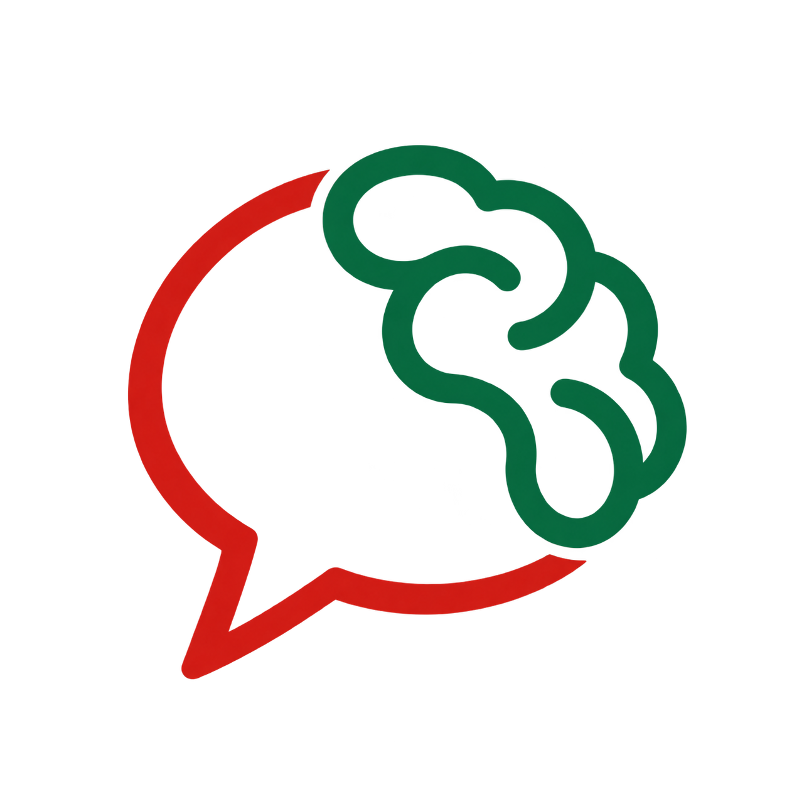
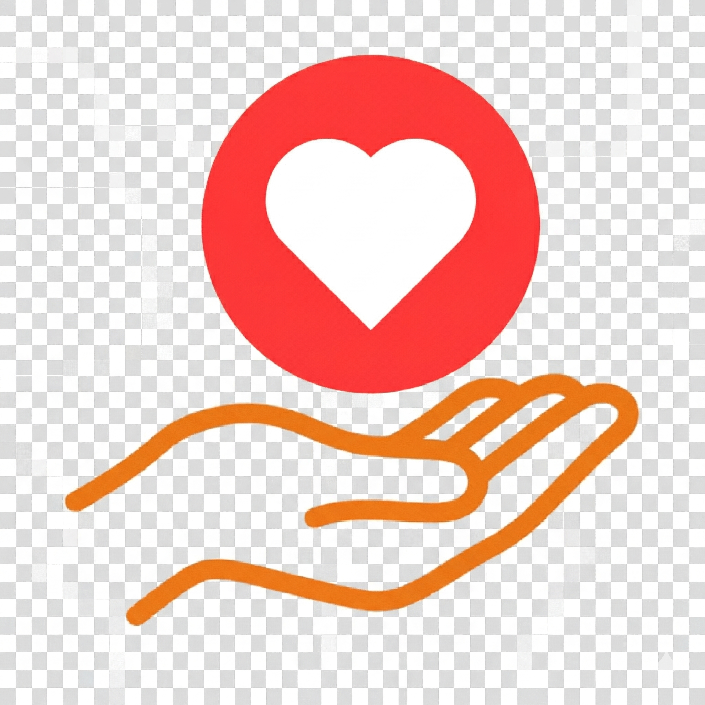

Penser. Coder.
Recommencer.
APPLICATION iOS

LE BASQUE, AU QUOTIDIEN.Mintza
MobileApprendre le basque, une leçon à la fois. Une application iOS avec des exercices, un test de positionnement et un suivi de progression.
ÉTUDIANT INGÉNIEUR · INFORMATIQUE
Du code, des idées.
Et des projets qui prennent vie.
Étudiant à ISA NUM, je développe des expériences web et mobiles, de l’interface à la base de données.
Penser. Coder.
Recommencer.
DE L’IDÉE AU CODE
Deux univers, un même fil conducteur :
créer des outils utiles.

LE BASQUE, AU QUOTIDIEN.Apprendre le basque, une leçon à la fois. Une application iOS avec des exercices, un test de positionnement et un suivi de progression.

LE NUMÉRIQUE QUI CRÉE DU LIEN.Mettre en relation les habitants et les bénévoles. Un site pour demander de l’aide, proposer son temps et organiser l’entraide locale.
DERRIÈRE LES LIGNES DE CODE
L’informatique, du premier écran jusqu’aux données.
Je suis étudiant en école d’ingénieur en informatique à ISA NUM. Mes projets explorent le développement mobile et web, avec des sujets ancrés dans le quotidien : apprendre une langue et faciliter l’entraide.
Avec Mintza et MainsTendues, je travaille sur les différentes parties d’une application : interfaces, logique métier, échanges avec le serveur et bases de données.
SwiftUI · HTML · CSS
JavaScript
PHP · API
SQL · MariaDB
MON PARCOURS
Ma formation et mes projets, réunis dans un CV simple à consulter et à imprimer.
Consulter mon CVFORMATION EN COURS
ISA NUM
PROJETS
Mintza · MainsTendues
Interfaces, API et bases de données
LA SUITE S’ÉCRIT ENSEMBLE
Retrouvez mes projets et échangeons sur GitHub.
Retrouver Ioritz sur GitHub